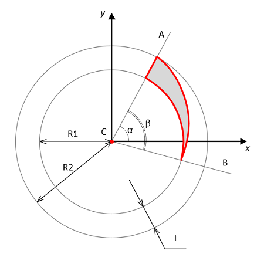

Home → Segment Spiral
Segment spiral is a part of a ring segment, limited by a circle and a spiral, having a common center, as well as a ray emanating from this center (Fig. 1).

Fig. 1 - Segment Spiral Geometry
C - segment spiral center - this is the center of the base segment.
R1 - radius of the smaller circle.
R2 - radius of the larger circle.
CA - ray, bounding the base segment and determining its beginning.
CB - ray, bounding the base segment and determining its ending.
T - thickness of the base segment equal to the difference between R2 and R1.
α - initial angle of the base segment - this is the angle between the horizontal axis X and the ray CA.
β - angle of the base segment - this is the angle between the rays CA and CB.
The following scripts should be included in the <head> section:
To create an object, the main parameters are passed to the constructor function:
id - segment spiral identificator as a text string.
context - CanvasRenderingContext2D for drawing the segment spiral.
cx - X coordinate of the base segment center.
cy - Y coordinate of the base segment center.
r_in - base segment inner radius.
thickness - thickness of the base segment.
init_angle - the initial angle of the base segment in degrees. May take negative values.
angle - angle of the base segment in degrees.
The outer radius of the base segment r_out will be calculated automatically during the creation of the object.
Examples of using various properties and methods of the object.
position - the position of the figure in the base segment relative to the spiral side.
Valid position values:
"inner" - abutment to the inner boundary of the base segment.
"outer" - abutment to the outer boundary of the base segment.direction - direction of increasing figure thickness.
Valid direction values:
"clockwise".
"anticlockwise".
gradient - fill gradient. Type of value is SegmentGradient.
background - fill color (applies if fill gradient is not specified).
border_width - segment spiral border width.
border_color - segment spiral border color.
Segment spiral borders can be set separately.
Types of segment spiral borders (Fig. 2)
A) Opening Border – first border when clockwise movement.
Suitable for a spiral with an anticlockwise direction.
border_opening_width - width of the opening border.
border_opening_color - color of the opening border.
B) Outer Border – segment arc with larger radius.
Suitable for a spiral with an outer position.
border_outer_width - width of the outer border.
border_outer_color - color of the outer border.
C) Inner Border – segment arc with smaller radius.
Suitable for a spiral with an inner position.
border_inner_width - width of the inner border.
border_inner_color - color of the inner border.
D) Closing Border – extreme border when clockwise movement.
Suitable for a spiral with a clockwise direction.
border_closing_width - width of the closing border.
border_closing_color - color of the closing border.
E) Spiral Borders – spiral side of a figure.
border_spiral_width - width of the spiral border.
border_spiral_color - color of the spiral border.
If a separate spiral border width and/or color is specified, then the specified style will be used to draw it.
If a separate spiral border is not specified, then the general style of segment border will be used to draw it.
visible - flag ensures the visibility of the object if set in true.
in_progress - flag takes the value true during the animation.
calc() - performs basic calculations of the shape and style of a segment spiral when it is created, changed and during animation.
This method should be called after changing the properties of the object so that they take effect.calcBorder() - computes segment spiral borders styles. Called automatically from calc() method.
draw() - draws an object.
instanceCopy() - creates an independent copy of the object.
Segment Spiral animation is various changes in the shape, position, or style of the segment over time.
Key animation parameters:
duration - animation duration. Sets in seconds.
delay - delay before the start of the animation. Sets in seconds.
direction - animation direction. Valid values depend on the type of animation.
appear(direction, duration, delay) - the appearance of a segment due to a gradual change in its shape.
Valid values for the direction:
"from-center" - from segment center.
"to-center" - to segment center.
"from-axis" - from segment axis.
"clockwise" - clockwise from the opening border.
"anticlockwise" - anticlockwise from the closing border.disappear(direction, duration, delay) - the disappearance of a segment due to a gradual change in its shape.
Valid values for the direction:
"from-center" - from segment center.
"from-outside" - to segment center.
"to-axis" - to segment axis.
"clockwise" - clockwise to the closing border.
"anticlockwise" - anticlockwise to the opening border.rotate(direction, angle, duration, delay) - rotation of the segment by angle for duration seconds.
The angle of rotation is set in degrees.
Valid values for the direction:
"clockwise" - clockwise rotation.
"anticlockwise" - anticlockwise rotation.fadeIn(duration, delay) - gradual appearance of a segment due to a change in its transparency.
fadeOut(duration, delay) - gradual disappearance of a segment due to a change in its transparency.
Events triggered by a SegmentSpiral are implemented using a CustomEvent.
In the detail.spiral field, a link to the object itself is passed.
segment-spiral-changed - event dispatches every time the calc() method is executed.
segment-spiral-appeared
segment-spiral-disappeared
segment-spiral-rotated
segment-spiral-faded-in
segment-spiral-faded-out
Home → Segment Spiral